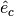

BaseRepresentation¶
-
class
astropy.coordinates.BaseRepresentation(*args, **kwargs)[source] [edit on github]¶ Bases:
astropy.coordinates.BaseRepresentationOrDifferentialBase for representing a point in a 3D coordinate system.
Parameters: comp1, comp2, comp3 :
Quantityor subclassThe components of the 3D points. The names are the keys and the subclasses the values of the
attr_classesattribute.differentials : dict,
BaseDifferential, optionalAny differential classes that should be associated with this representation. The input must either be a single
BaseDifferentialsubclass instance, or a dictionary with keys set to a string representation of the SI unit with which the differential (derivative) is taken. For example, for a velocity differential on a positional representation, the key would be's'for seconds, indicating that the derivative is a time derivative.copy : bool, optional
If
True(default), arrays will be copied rather than referenced.Notes
All representation classes should subclass this base representation class, and define an
attr_classesattribute, anOrderedDictwhich maps component names to the class that creates them. They must also define ato_cartesianmethod and afrom_cartesianclass method. By default, transformations are done via the cartesian system, but classes that want to define a smarter transformation path can overload therepresent_asmethod. If one wants to use an associated differential class, one should also defineunit_vectorsandscale_factorsmethods (see those methods for details). Finally, classes can also define arecommended_unitsdictionary, which maps component names to the units they are best presented to users in (this is used only in representations of coordinates, and may be overridden by frame classes).Attributes Summary
differentialsA dictionary of differential class instances. recommended_unitsshapeThe shape of the instance and underlying arrays. Methods Summary
cross(other)Vector cross product of two representations. dot(other)Dot product of two representations. from_representation(representation)Create a new instance of this representation from another one. mean(*args, **kwargs)Vector mean. norm()Vector norm. represent_as(other_class[, differential_class])Convert coordinates to another representation. scale_factors()Scale factors for each component’s direction. sum(*args, **kwargs)Vector sum. unit_vectors()Cartesian unit vectors in the direction of each component. with_differentials(differentials)Create a new representation with the same positions as this representation, but with these new differentials. without_differentials()Return a copy of the representation without attached differentials. Attributes Documentation
-
differentials¶ A dictionary of differential class instances.
The keys of this dictionary must be a string representation of the SI unit with which the differential (derivative) is taken. For example, for a velocity differential on a positional representation, the key would be
's'for seconds, indicating that the derivative is a time derivative.
-
recommended_units= {}¶
-
shape¶ The shape of the instance and underlying arrays.
Like
shape, can be set to a new shape by assigning a tuple. Note that if different instances share some but not all underlying data, setting the shape of one instance can make the other instance unusable. Hence, it is strongly recommended to get new, reshaped instances with thereshapemethod.Raises: AttributeError
If the shape of any of the components cannot be changed without the arrays being copied. For these cases, use the
reshapemethod (which copies any arrays that cannot be reshaped in-place).
Methods Documentation
-
cross(other)[source] [edit on github]¶ Vector cross product of two representations.
The calculation is done by converting both
selfandothertoCartesianRepresentation, and converting the result back to the type of representation ofself.Parameters: other : representation
The representation to take the cross product with.
Returns: cross_product : representation
With vectors perpendicular to both
selfandother, in the same type of representation asself.
-
dot(other)[source] [edit on github]¶ Dot product of two representations.
The calculation is done by converting both
selfandothertoCartesianRepresentation.Note that any associated differentials will be dropped during this operation.
Parameters: other :
BaseRepresentationThe representation to take the dot product with.
Returns: dot_product :
QuantityThe sum of the product of the x, y, and z components of the cartesian representations of
selfandother.
-
classmethod
from_representation(representation)[source] [edit on github]¶ Create a new instance of this representation from another one.
Parameters: representation :
BaseRepresentationinstanceThe presentation that should be converted to this class.
-
mean(*args, **kwargs)[source] [edit on github]¶ Vector mean.
Averaging is done by converting the representation to cartesian, and taking the mean of the x, y, and z components. The result is converted back to the same representation as the input.
Refer to
meanfor full documentation of the arguments, noting thataxisis the entry in theshapeof the representation, and that theoutargument cannot be used.Returns: mean : representation
Vector mean, in the same representation as that of the input.
-
norm()[source] [edit on github]¶ Vector norm.
The norm is the standard Frobenius norm, i.e., the square root of the sum of the squares of all components with non-angular units.
Note that any associated differentials will be dropped during this operation.
Returns: norm :
astropy.units.QuantityVector norm, with the same shape as the representation.
-
represent_as(other_class, differential_class=None)[source] [edit on github]¶ Convert coordinates to another representation.
If the instance is of the requested class, it is returned unmodified. By default, conversion is done via cartesian coordinates.
Parameters: other_class :
BaseRepresentationsubclassThe type of representation to turn the coordinates into.
differential_class : dict of
BaseDifferential, optionalClasses in which the differentials should be represented. Can be a single class if only a single differential is attached, otherwise it should be a
dictkeyed by the same keys as the differentials.
-
scale_factors()[source] [edit on github]¶ Scale factors for each component’s direction.
Given unit vectors  and scale factors
 ,
a change in one component of
,
a change in one component of  corresponds to a change
in representation of
corresponds to a change
in representation of  .
.Returns: scale_factors : dict of
QuantityThe keys are the component names.
-
sum(*args, **kwargs)[source] [edit on github]¶ Vector sum.
Adding is done by converting the representation to cartesian, and summing the x, y, and z components. The result is converted back to the same representation as the input.
Refer to
sumfor full documentation of the arguments, noting thataxisis the entry in theshapeof the representation, and that theoutargument cannot be used.Returns: sum : representation
Vector sum, in the same representation as that of the input.
-
unit_vectors()[source] [edit on github]¶ Cartesian unit vectors in the direction of each component.
Given unit vectors and scale factors
,
a change in one component of corresponds to a change
in representation of .Returns: unit_vectors : dict of
CartesianRepresentationThe keys are the component names.
-
with_differentials(differentials)[source] [edit on github]¶ Create a new representation with the same positions as this representation, but with these new differentials.
Differential keys that already exist in this object’s differential dict are overwritten.
Parameters: differentials : Sequence of
BaseDifferentialThe differentials for the new representation to have.
Returns: newrepr
A copy of this representation, but with the
differentialsas its differentials.
-
without_differentials()[source] [edit on github]¶ Return a copy of the representation without attached differentials.
Returns: newrepr
A shallow copy of this representation, without any differentials. If no differentials were present, no copy is made.
-